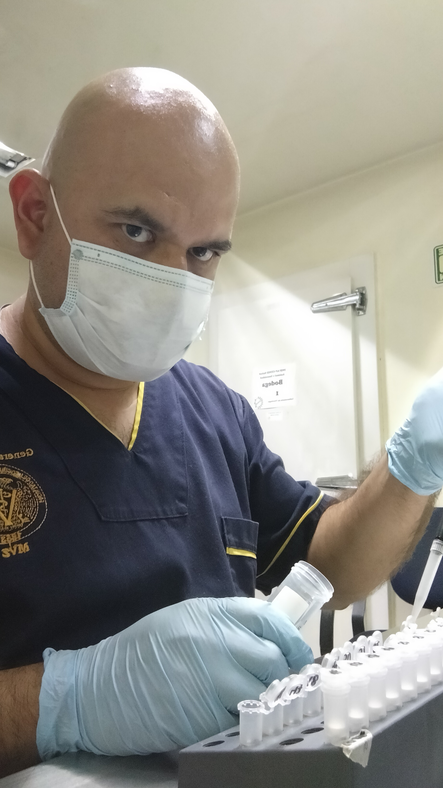
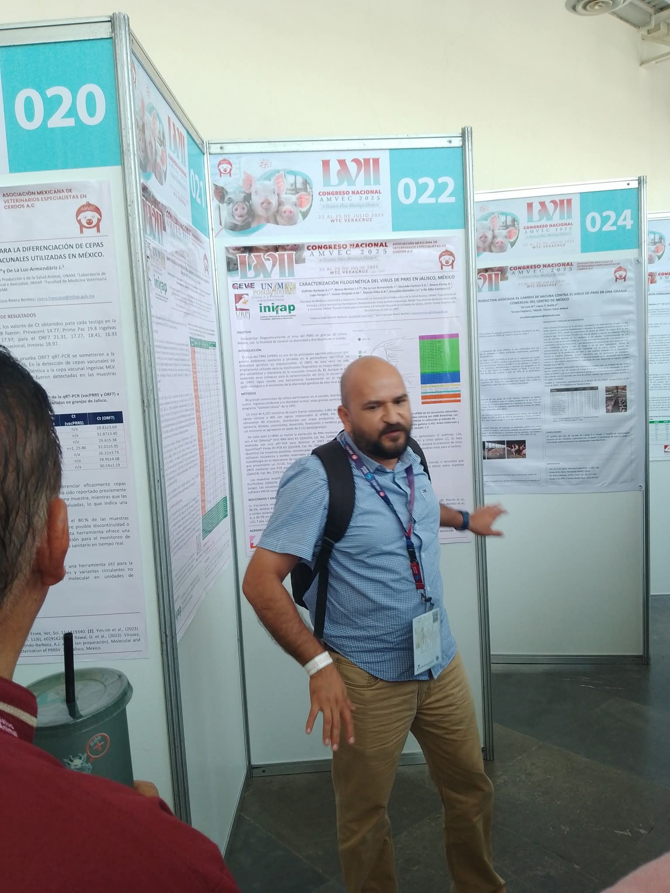

Fieldwork and Laboratory Activities
Examples of activities related to molecular epidemiology research and laboratory diagnostics in swine health.

Molecular epidemiology research activities.

Laboratory processing and analysis for PCV2.

Laboratory work related to PRRSV diagnostics.